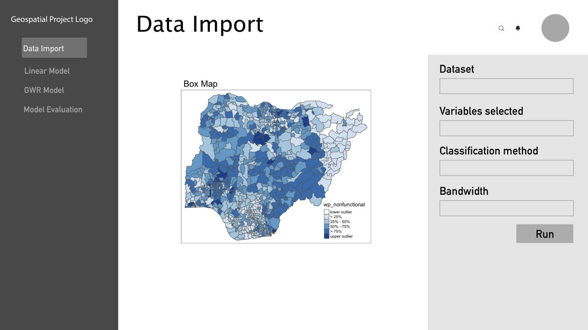
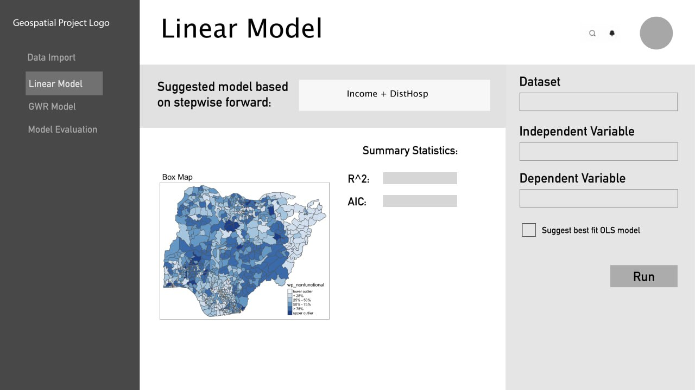
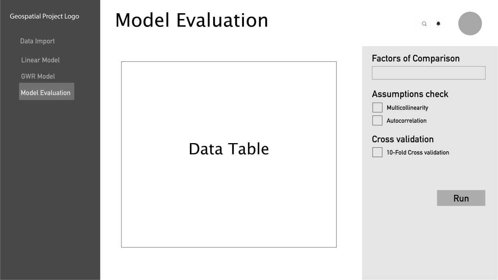
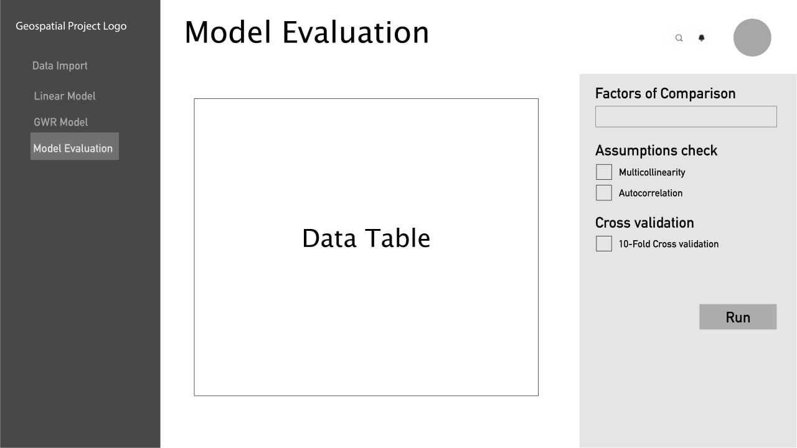

RegressRangers
Problem Statement
Many real-world phenomena exhibit significant spatial variability, and traditional regression models that assume spatial homogeneity fail to capture the underlying patterns in the data set collected. Geographically weighted regression models are an effective way to address this problem by allowing for local variation in the relationship between the response variable and the predictor variables. However, creating accurate geographically weighted regression models can be a complex and time-consuming process that requires specialized knowledge and software. Additionally, evaluating the performance of these models can be challenging due to the local nature of the models.
Case Study
Analysing vaccination rates is crucial in the current climate as the world is grappling with a global pandemic caused by COVID-19. Vaccination is one of the most effective ways to prevent the spread of infectious diseases and protect communities from illness and death. With the availability of COVID-19 vaccination data, we can gain important insights into the progress of immunization campaigns and help identify areas where more resources and efforts are needed to increase vaccine uptake. Additionally, analyzing vaccination rates can inform public health policies and interventions aimed at improving vaccine distribution, accessibility, and equity, particularly for vulnerable populations who may face barriers to vaccination.
Key Objectives
Our project aims to create a web-based geospatial analytics tool that helps users create and evaluate geographical regression models easily by:
importing data
identifying significant regressors in the model
creating customised Linear and Geographically Weighted Models
evaluating the models based on a variety of statistical tests
To build and test our application, we will be modeling the vaccination rate of DKI, Jakarta in the various sub-districts based on a variety of socio-economic factors.
| Name | Source |
|---|---|
| Number of school facilities | data.humdata.org |
| Number of health care facilities | data.humdata.org |
| DKI Jakarta Map Boundary | indonesia-geospasial.com |
| Number of COVID-19 cases per sub-district | riwayat-file-covid-19-dki-jakarta-jakartagis.hub.arcgis.com |
| Population density of the various sub-districts in DKI Jakarta (2019) | data.jakarta.go.id |
Male to female ratio of the various sub-districts in DKI Jakarta Number of Elderly in the sub-districts of DKI Jakarta |
data.jakarta.go.id |
| Number of Educated people per sub-district | data.jakarta.go.id |
| Number of health workers per sub-district | data.jakarta.go.id |
We have identified studies that have attempted to perform similar types of analyses:
1. Spatial Modeling of COVID-19 Vaccine Hesitancy in the United States
| Objective | This study examines the spatial distribution of vaccination rates in the United States and identifies significant covariates using multiscale geographically weighted regression, which can be used as a reference for region-specific policies in monitoring vaccination programs. |
| Methodology |
|
| Key Learning Points |
|
| Areas for Improvement |
|
2. Application of geographically-weighted regression analysis to assess risk factors for malaria hotspots in Keur Soce health and demographic surveillance site
| Objective | This study investigated malaria hotspots in Keur Soce sites by using geographically-weighted regression. Because of the occurrence of hotspots, spatial modelling of malaria cases could have a considerable effect in disease surveillance. |
| Methodology |
|
| Key Learning Points |
|
| Areas for Improvement |
|
3. A geographically weighted regression approach to investigate the effect of traffic conditions and road characteristics on air pollutant emissions
| Objective |
|
| Methodology |
|
| Key Learning Points |
|
| Areas for Improvement |
|
- Data Preparation
Import data into R environment
Perform data wrangling - Kriging Interpolation Method
- Exploratory Data Analysis (EDA)
EDA helps users to understand the data distribution, detect outliers, and identify any missing values. This helps us evaluate the that the assumptions of statistical tests are met before performing them. EDA also helps users generate hypotheses that can guide further investigations of the issue at hand.Draw Histograms
Create Choropleth Map
Check if statistical test assumptions are met
- Linear Regression (OLS)
Performing Ordinary Least Squares regression before GWR is important as it provides a globel model for the data. It can help identify overall trends and relationships in the data. By comparing the results of OLS and GWR, users can better understand how relationship between variables vary across space and make more informed decisions.Generalised Multiple Linear Regression Method
Stepwise forward regression (focus on covariates with highest increase in \(R^2\) and \((VIF) < 3\)
Using stepwise forward regression helps users identify the most important predictors of a response variable while avoiding overfitting of the model.
- Geographically Weighted Regression (GWR)
As mentioned in our Problem Statement, GWR helps users determine significant covariates because it allows for the estimation of local regression coefficients that could vary spatially but not revealed in a global model (such as OLS)- Using Spearman Correlation Coefficient (allows us to remove insignificant variables - if \(p < 0.05\))
It is a non-parametric measure of association that does not assume a linear relationship between variables and can be useful examining the local relationships that may vary spatially. Additionally, it is not heavily influenced by outliers.
- Using Spearman Correlation Coefficient (allows us to remove insignificant variables - if \(p < 0.05\))
- Evaluation of Models
10-fold cross validation - helps to estimate the model’s generalisation error. Can be used to compare the different models created by the different inputs of the users.
VIF - helps assess multicollinearity among the predictor variables.
Moran’s I statistic - on model’s residuals to determine if they are spatially autocorrelated.
AIC - lower values are desired as it implies a more parsimonious model.
Adjusted\(R^2\) - a larger value indicates that the model can explain a larger variance of target.variable (i.e., COVID-19 vaccination rate) and is preferred.

  

 Credit to TeamGantt for their gantt chart template.
Credit to TeamGantt for their gantt chart template.
Mollalo, A., & Tatar, M. (2021). Spatial Modeling of COVID-19 Vaccine Hesitancy in the United States. International journal of environmental research and public health, 18(18), 9488. https://doi.org/10.3390/ijerph18189488
Ndiath, M. M., Cisse, B., Ndiaye, J. L., Gomis, J. F., Bathiery, O., Dia, A. T., Gaye, O., & Faye, B. (2015). Application of geographically-weighted regression analysis to assess risk factors for malaria hotspots in Keur Soce health and demographic surveillance site. Malaria journal, 14, 463. https://doi.org/10.1186/s12936-015-0976-9
Chengcheng, X., Jingya, Z., Liu, P. (2019). A geographically weighted regression approach to investigate the effects of traffic conditions and road characteristics on air pollutant emissions. Journal of Cleaner Production, Volume 239, 118084, ISSN 0959-6526, https://doi.org/10.1016/j.jclepro.2019.118084
| Name | |
|---|---|
| PENG YOU YUN | youyun.peng.2021@smu.edu.sg |
| HO YONG QUAN | yongquan.ho.2020@smu.edu.sg |
| S GUGANESH | guganeshs.2020@smu.edu.sg |